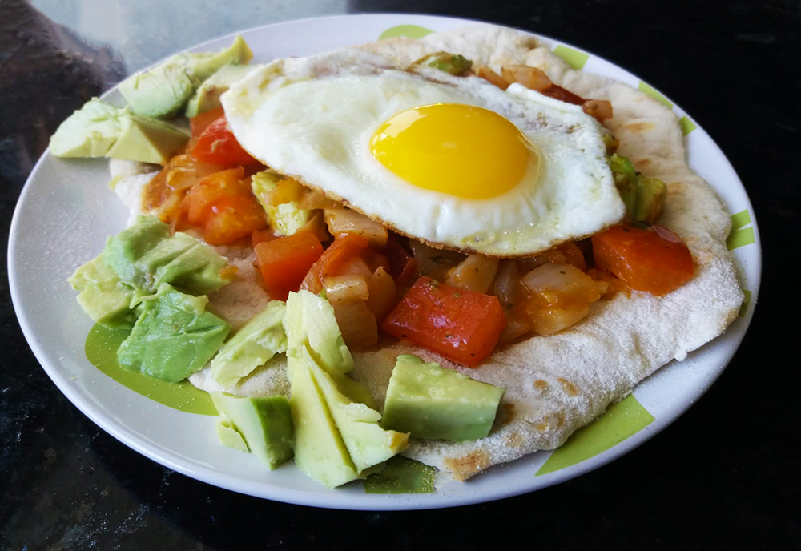

avocado salade

amerikaanse caesar salade

italiaanse caponata

salade met gegrilde ananas

chili sin carne met guacamole

enchiladas

mexicaanse huevos rancheros
Dit is een heerlijk Mexicaans ontbijtje, goed om de dag mee te beginnen!

Bereidingsduur: 25 minuten
Aantal personen: 2
Ingrediënten:
2 eieren
2 tomaten
2 volkoren tortilla wraps
1 ui
1 teentje knoflook
1 avocado
1 theelepel koriander
1 theelepel komijn
1 theelepel picadillo kruiden
naar wens chilipoeder
2 eieren
2 tomaten
2 volkoren tortilla wraps
1 ui
1 teentje knoflook
1 avocado
1 theelepel koriander
1 theelepel komijn
1 theelepel picadillo kruiden
naar wens chilipoeder
Instructies:
1. Snijd de ui, tomaat en avocado in kleine stukken en pers de knoflook.
2. Tijd om de salsa fresca te maken. Fruit de ui en knoflook kort. Voeg vervolgens de tomaten, de helft van de avocado en de kruiden toe. Voeg een beetje water toe en bak kort mee.
3. Bak in een andere pan 2 eieren en laat de dooier heel.
4. Maak de tortilla's klaar volgens de verpakking.
5. Beleg de tortilla met de salsa, het ei en de rest van de avocado. Voeg naar smaak peper en zout toe.
1. Snijd de ui, tomaat en avocado in kleine stukken en pers de knoflook.
2. Tijd om de salsa fresca te maken. Fruit de ui en knoflook kort. Voeg vervolgens de tomaten, de helft van de avocado en de kruiden toe. Voeg een beetje water toe en bak kort mee.
3. Bak in een andere pan 2 eieren en laat de dooier heel.
4. Maak de tortilla's klaar volgens de verpakking.
5. Beleg de tortilla met de salsa, het ei en de rest van de avocado. Voeg naar smaak peper en zout toe.